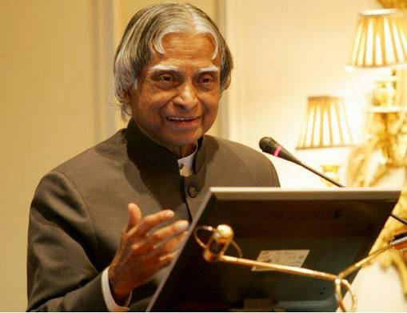

Who he was
Dr. Kalam was an aerospace scientist who became the 11th President of India. He inspired millions of students to dream big.
Timeline
- 1931: Born in Rameswaram, Tamil Nadu
- 1958: Joined DRDO as a scientist
- 1969: Moved to ISRO and led the SLV-III project
- 1997: Awarded the Bharat Ratna
- 2002: Became the 11th President of India
- 2015: Passed away while giving a lecture at IIM Shillong
Achievements
- Played a key role in India's satellite launch vehicle and missile programmes
- Received the Padma Bhushan, Padma Vibhushan and Bharat Ratna
- Wrote books like Wings of Fire to inspire young people
"Dream, dream, dream. Dreams transform into thoughts and thoughts result in action."
- Dr. A.P.J. Abdul Kalam